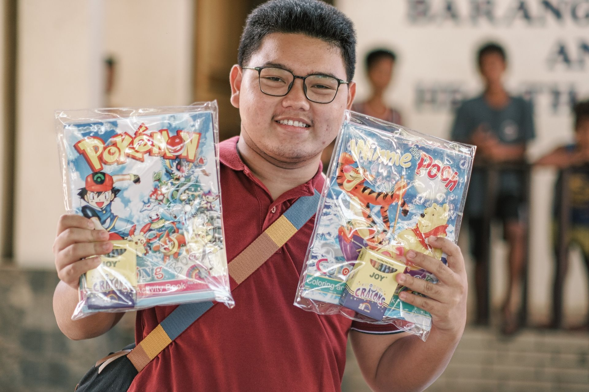
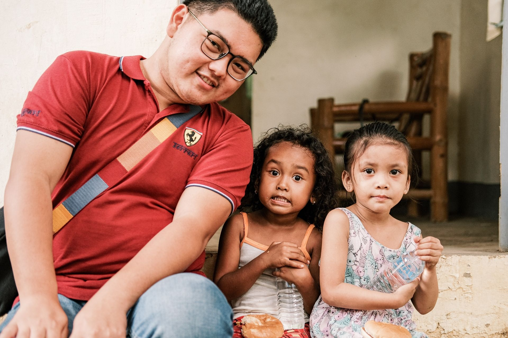

Resistance · Community & Service · Case
Paskong Katutubo
An outreach initiative that made me think more carefully about equity, institutional access, dignity, fairness, and the discipline required to keep service from becoming personal or political theater.
Year: 2022
Why this case matters
Equity begins by noticing who is hardest to reach.
Working in government came with certain advantages. I had access to networks, relationships, and institutional channels that could help mobilize resources more quickly than I could as a private individual.
I began to think that one responsible way to use that access was to direct attention toward communities farther from the normal centers of public activity, including Indigenous communities whose geography and circumstances could make them easier to overlook.
For me, that was a practical expression of equity. It was not about treating every community exactly the same. It was about recognizing that unequal conditions sometimes require more deliberate effort simply to make people equally visible.
Documentary record
Paskong Katutubo in Abucay.
These photographs document the outreach with the Aeta community of Abucay, Bataan.


Case record
Access redirected toward equity.
- Role
- Organizer
- Period
- December 2022
- Reach
- Approximately 1,500 Indigenous children
- Documented community
- Aeta community of Abucay, Bataan
- Materials
- Coloring and activity materials with snacks
- Focus
- Equity, access, dignity, fairness, and community outreach
The work
Remoteness should not become invisibility.
Paskong Katutubo was organized for Indigenous children in Bataan and reached approximately 1,500 children through the distribution of coloring materials and snacks.
The practical work was simple in form: mobilize resources, prepare materials, coordinate distribution, and make sure those resources reached the intended communities.
But the larger question for me was why some communities require more deliberate effort to reach in the first place.
Geography matters. Institutional visibility matters. Access to public-facing networks matters. When those things are distributed unequally, treating everyone identically can preserve the very imbalance we claim to be addressing.
Charity, dignity, and kapwa
I did not want the meaning of the work to end with what was inside the bags.
I was conscious that Paskong Katutubo was charitable in form. Activity materials and snacks can respond to an immediate need or create a meaningful moment, but they do not correct the structural conditions that make some communities harder to reach.
Through the lens of kapwa, I became more conscious of different depths of helping. Charity can respond to something immediate. Capability-building can transfer knowledge, tools, or resources. Empowerment goes further by strengthening people's ability to act for themselves.
I would not claim that this outreach accomplished all of that. What I hoped was that the encounter communicated something beyond assistance: that their circumstances were seen, that their struggles mattered, and that systemic imbalance did not make their dignity any less equal to anyone else's.
The children were not distant beneficiaries receiving generosity from people with greater access. They were part of the same human and social community. Care should begin from that recognition.
Self-regulation
Access should not become personal privilege, political theater, or proof of someone else's generosity.
Working in government made it easier to mobilize relationships and resources, but that advantage also required self-awareness. Access can be useful, but it can also tempt people to personalize public service, attach it to political identity, or turn assistance into a story about the person delivering it rather than the people being served.
I wanted to resist that temptation.
I do not believe in a culture of padrino, where assistance depends on favors, proximity to power, or knowing the right person. I also did not want outreach to be cloaked in the politicization of government service, where public resources or institutional access become confused with personal benevolence.
That is where self-regulation became important to me. I had to keep asking: am I helping because a community has a real need, or because the act of helping makes someone look powerful? Am I using access to widen fairness, or simply reproducing the same unequal relationships in a kinder form?
Empathy gave the work its emotional starting point. Fairness gave it a standard. If people were farther from institutions, less visible to decision-makers, or carrying disadvantages created by geography and systemic imbalance, then reaching them more deliberately was not favoritism. It was an attempt to correct for unequal starting points.
I also hoped the children and families did not see me as a messiah, or as someone arriving to rescue them. I was only an instrument in a much larger process, one person temporarily able to connect resources to a community.
What I wanted the encounter to suggest was simpler: an alternative exists. Public service can be organized around dignity instead of dependence, around fairness instead of proximity, and around empathy without turning the person who helps into the center of the story.
Resistance
Resistance can also mean refusing to become the center of the service.
The goal is not to make padrino more benevolent, or to replace one form of dependence with another. The goal is to use institutional access responsibly while working toward a system where people do not need personal connections to be seen.
For me, that requires self-regulation: resisting the urge to turn service into political credit, resisting the comfort of being treated as the benefactor, and continually returning to empathy, fairness, and the dignity of the people being served.
What I carry forward
Equity asks who remains unseen. Empathy asks us not to look away.
Paskong Katutubo reinforced for me that community work is not only about scale. It is also about context, visibility, and the unequal distance different communities have from institutions and resources.
Charity can provide something useful today. Equity asks why reaching some people requires extraordinary effort in the first place. Fairness then asks whether we are willing to use more effort where the starting conditions are more unequal.
Kapwa asks me to go one step further: to see the person being served not as someone outside my world, but as someone whose dignity belongs inside the same moral community as my own.
Resistance, in this case, meant more than refusing to let geography or unequal access determine whose needs were worth noticing. It also meant resisting the urge to let service become a vehicle for political identity, personal credit, or the image of a savior.
I hope what remained was not the impression that one person had come to save anyone. I hope the encounter showed something more durable: that institutions can be used differently, that access can be handled with restraint, and that another way of serving people is possible.
Community → Resistance
Return to the wider engagement.
Explore Community & Service for more cases about participation, access, trust, coordination, equity, and what communities can make possible together.
Community & Service →